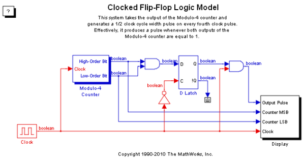
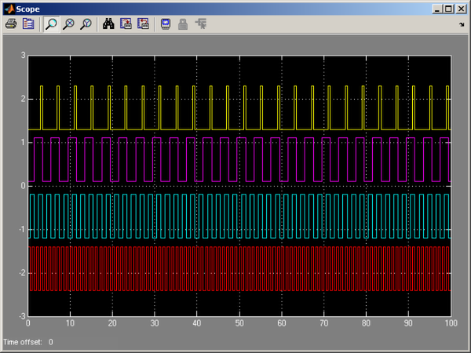

Modulo-4 Counter Using Flip-Flops
This demonstration shows how to use Flip-Flop blocks (found in the Simulink® Extras Library) to implement a Modulo-4 counter. The model takes the output of a Modulo-4 counter and generates a half clock cycle width pulse on every fourth clock pulses. Effectively, it produces a pulse whenever both outputs of the Modulo-4 counter are equal to 1.
 